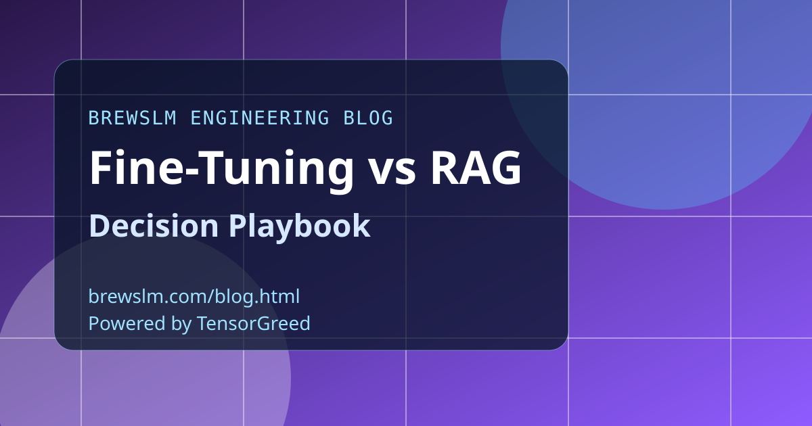

Start with freshness requirements
If your knowledge base changes daily, retrieval usually wins because updates can land without model retraining. If your task is stable and style-heavy, fine-tuning often gives stronger consistency and lower prompt complexity. Freshness cadence is usually the first branch in the decision tree.
Compare failure modes, not just headline accuracy
RAG failures often come from retrieval misses, chunking issues, and context ranking mistakes. Fine-tuning failures are more about distribution shift, overfitting, and stale model behavior over time. Choose the failure mode your team can detect, debug, and fix fastest.
Map infra and latency budgets
RAG introduces retrieval hops, vector storage, and query orchestration overhead. Fine-tuned systems reduce retrieval complexity but can require heavier retraining cycles and version management. Build latency and cost budgets with realistic p95 workloads before committing to an architecture.
Use hybrid only when responsibilities are clear
Hybrid systems work best when tuned behavior and retrieved knowledge have explicit boundaries. Keep retrieval for fast-changing facts and adaptation for tone, policy, or structured output behavior. Without clean boundaries, hybrid complexity can erase the expected gains.